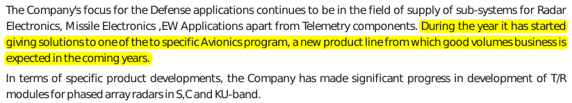

I looked at Astral Microwave on Day 2, while looking at defense companies. The stock looked interesting as it was showing a very good year-on-year growth and yet available at multi-year low (at a market capitalization of 276 crores).
I began reading the company's 2006 annual report. It was an exceptional year as the company's top-line grew by over 50%. Net profit that year was of 37 crores (and has stayed below it until 2013). That year company declared a 1:1 bonus (along with a stock split in 5:1 ratio). The R&D expenditure was 18% of revenue and the annual report was pretty optimistic about the future.

I looked at the historical price chart to find that the market had been even more optimistic and had valued the company at whooping 1000 crores (37 times its annual earnings).
Next year, company reported the "end of major production orders of ground based radar sub-system which dominated both the top line and bottom line growth of the company in the last two financial years."
Lesson of the day was never to overpay for a stock, no matter how tempting the prospects might be.
At current levels, the stock is at 7 times its earnings, has book orders of 1000+ crores "executable in the next 24 to 30 months" and the promoters are buying. Words in the annual report (2012) have become more cautious and it does not seem that one might be "overpaying" at these levels. But, I will still like to miss this opportunity and will look for businesses which are lesser dependent on government.